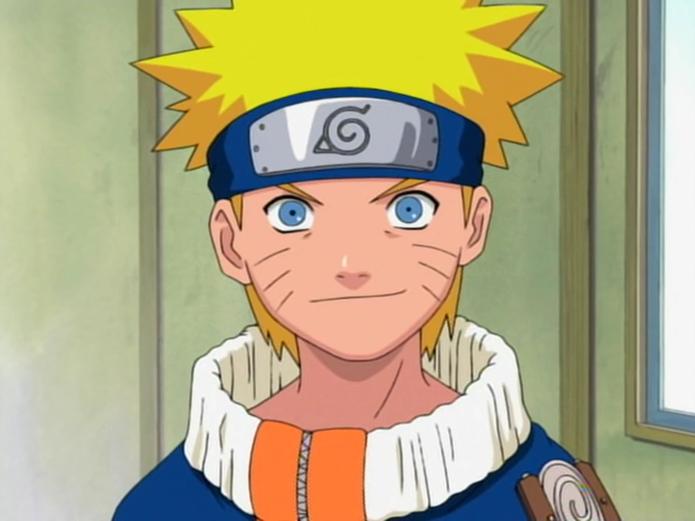
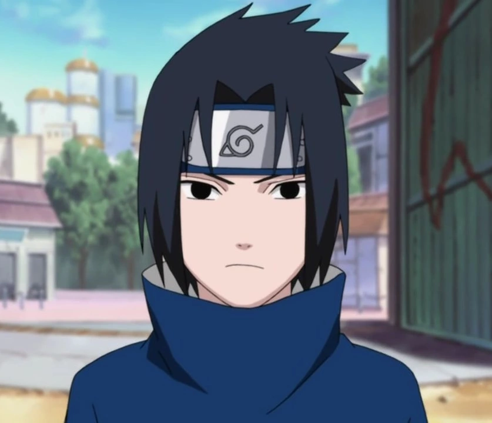

Naruto Uzumaki
Naruto Uzumaki é um shinobi de Konohagakure do clã Uzumaki. Desde seu nascimento, ele se tornou jinchūriki das Nove-Caudas, um destino que o levou a ser condenado e negligenciado por toda a aldeia durante sua infância. Ele entra para o Time 7, ao lado de Sakura Haruno, Sasuke Uchiha.

Sasuke Uchiha
Sasuke é membro do clã Uchiha, que era uma habilidosa família de ninjas da Vila Oculta da Folha.

Sakura Haruna
Sakura é uma kunoichi afiliada com a vila de Konoha, e parte da equipe 7, que consiste de si mesma, Naruto Uzumaki, Sasuke Uchiha e seu sensei, Kakashi Hatake.